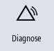

Im Fenster "Alarmprotokoll" erhalten Sie eine Liste mit allen bisher aufgetretenen Alarmen und Meldungen.
Es werden bis zu 500 verwaltete Kommen- und Gehen-Ereignisse in zeitlicher Reihenfolge angezeigt.
 | Maschinenhersteller Beachten Sie hierzu bitte die Angaben des Maschinenherstellers. |
Vorgehensweise
|  | 1. | Wählen Sie den Bedienbereich "Diagnose" an. |
| | 2. | Drücken Sie den Softkey "Alarmprotok.". |
| | | Das Fenster "Alarmprotokoll" wird geöffnet. Es werden bisher aufgetretene Kommen- und Gehen-Ereignisse seit dem Start des HMI aufgelistet. |
 | 3. | Drücken Sie den Softkey "Neu anzeigen", um die Liste der angezeigten Alarme/Meldungen zu aktualisieren. |
| | 4. | Drücken Sie den Softkey "Protokoll speichern". Das aktuell angezeigte Protokoll wird als Text-Datei alarmlog.txt in den Systemdaten im Verzeichnis /user/sinumerik/hmi/log/alarm_log abgelegt. |